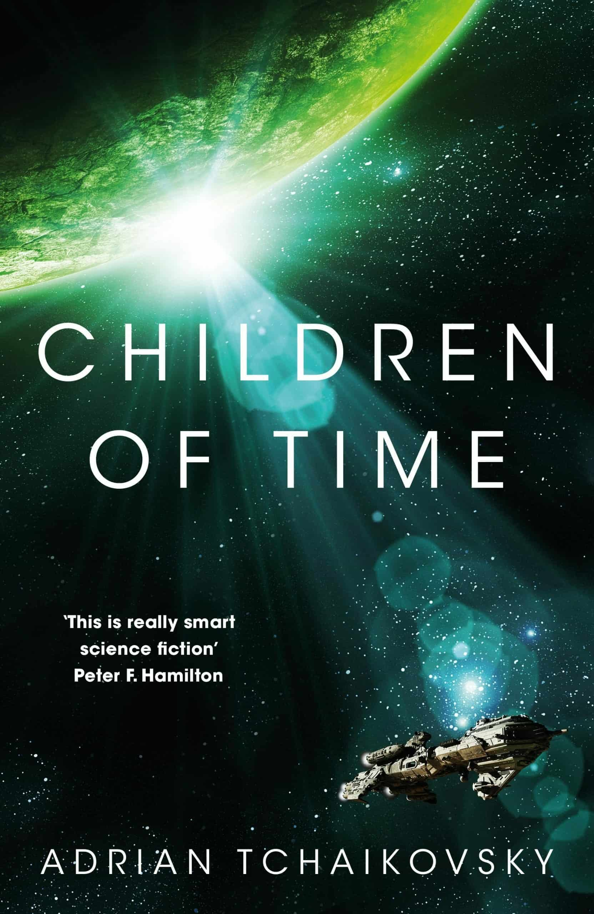

2020 год обещает порадовать русскоязычных поклонников фантастики изрядным количеством новых книг. Открывается все больше новых имен, которые уже прогремели на Западе и теперь добираются к нам, да и уже прославленные ветераны выпускают новые произведения. Мы собрали фантастические книги, которые должны в следующем году добраться до прилавков отечественных книжных магазинов.

Адриан Чайковски
«Дети времени»
«Дети времени» — масштабная космическая эпопея, которая принесла автору премию им. Артура Кларка и более тысячи пятибалльных рецензий на Amazon. А по размаху, теме и глубине заслужила сравнения с «Академией» Айзека Азимова и «Городом» Клиффорда Саймака. События романа разворачиваются на протяжении нескольких тысяч лет. Книга рассказывает о взлете и падении цивилизаций, а также о зарождении и эволюции цивилизации разумных пауков, с которыми предстоит столкнуться остаткам человечества.